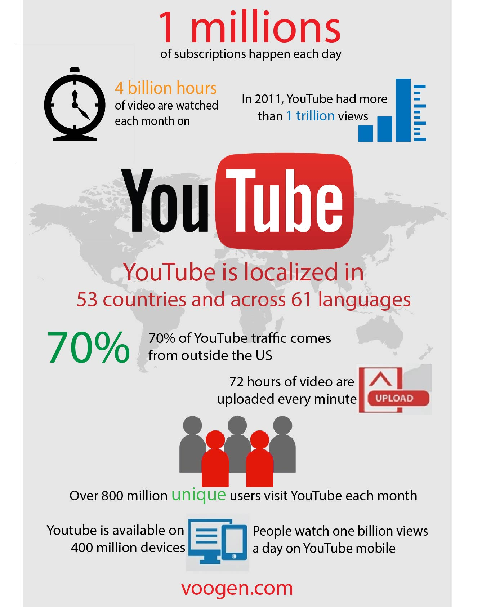

This is a head of a fictional character from the Star Wars show, called Boba Fett. It is done by myself where I drawed the outlines and coloured using Adobe Illustrator.
This is an infographic page for Youtube done using Adobe Illustrator, showing some interesting data of Youtube.
This is an icon for Messenger which I designed and executed using Adobe Illustrator tools.
This is a splash page for Messenger which I designed and executed using Abode Illustrator tools, after the new Messenger icon.
This is an infographic page for Messenger which I did research, designed and executed using Abode Illustrator tools, after the new Messenger splash page.